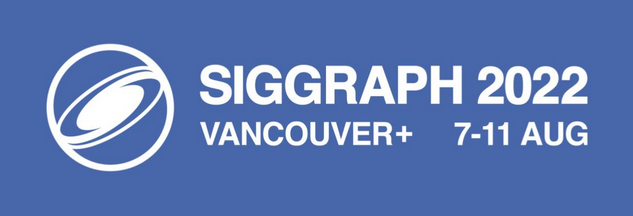
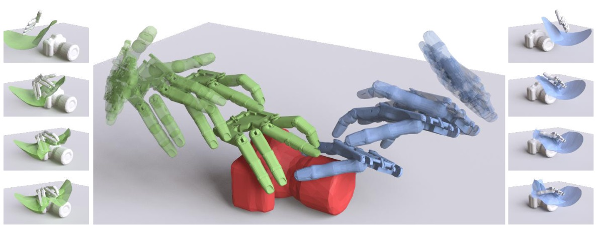
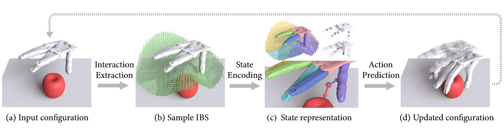
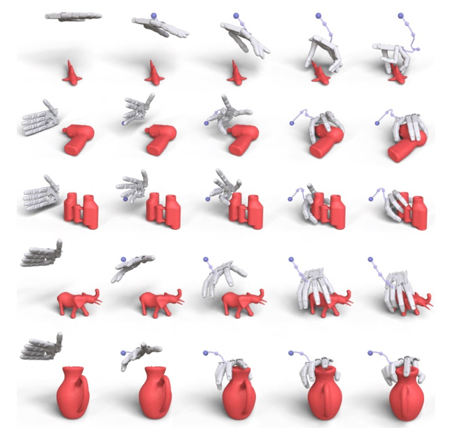
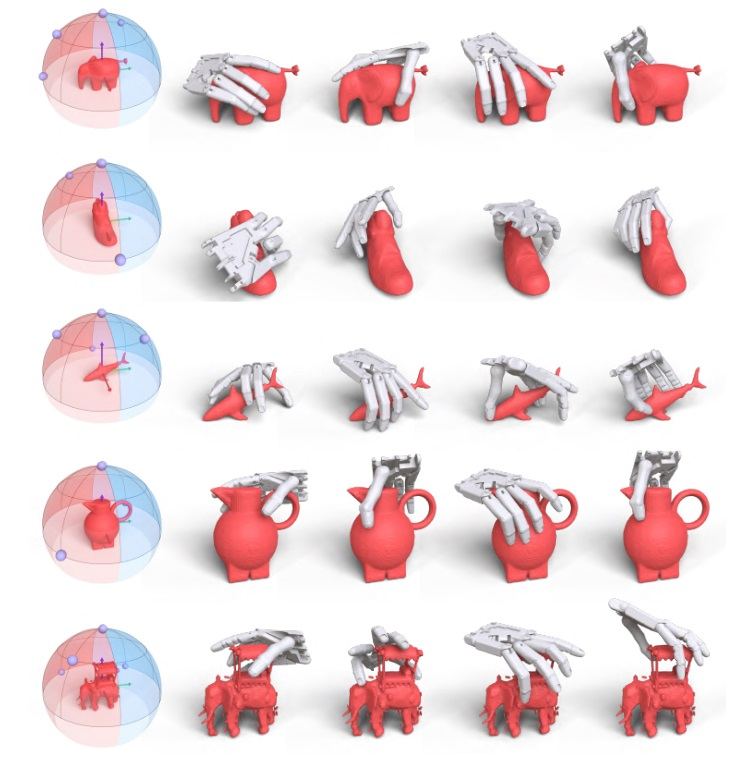
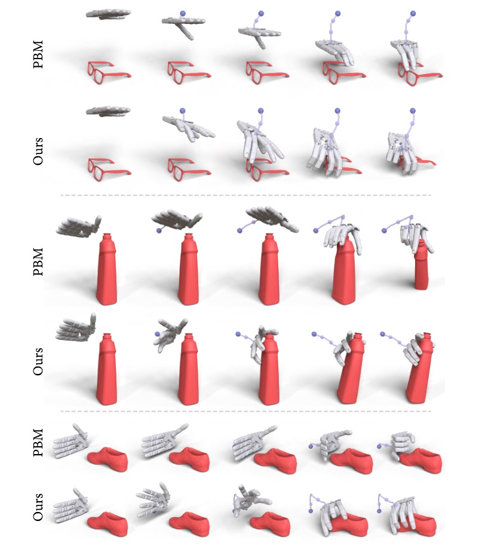

Learning High-DOF Reaching-and-Grasping via Dynamic Representation of Gripper-Object Interaction
Qijin She, Ruizhen Hu, Juzhan Xu, Min Liu, Kai Xu*, Hui Huang*
National University of Defense Technology, Shenzhen University
(Qijin and Ruizhen are co-first authors. Kai and Hui are joint corresponding authors.)
ACM Transactions
on Graphics (SIGGRAPH 2022), 41(4).

Results of our reaching-and-grasping motion planning method for the red camera put on the table given two different initial configurations of the
gripper shown in green and blue colors, respectively. For each result, we show four key frames of the reaching process and final grasping pose in the middle
and show the corresponding Interaction Bisector Surfaces (IBSs) used to encode the interactions on the side. Note that we enlarge the distance between the
gripper and the camera for the frames shown in the middle to show the gripper configurations more clearly.
|
Abstract
|
We approach the problem of high-DOF reaching-and-grasping via learning joint planning of grasp and motion with deep reinforcement learning. To resolve the sample efficiency issue in learning the high-dimensional and complex control of dexterous grasping, we propose an effective representation of grasping state characterizing the spatial interaction between the gripper and the target object. To represent gripper-object interaction, we adopt Interaction Bisector Surface (IBS) which is the Voronoi diagram between two close by 3D geometric objects and has been successfully applied in characterizing spatial relations between 3D objects. We found that IBS is surprisingly effective as a state representation since it well informs the fine-grained control of each finger with spatial relation against the target object. This novel grasp representation, together with several technical contributions including a fast IBS approximation, a novel vector-based reward and an effective training strategy, facilitate learning a strong control model of high-DOF grasping with good sample efficiency, dynamic adaptability, and cross-category generality. Experiments show that it generates high-quality dexterous grasp for complex shapes with smooth grasping motions.
|
|
|
Paper |
|
|
|
Slides |
|
|
|
| Images |

Overview of one iteration of our grasping motion planning method. Given an object in a scene context with the current gripper configuration, our
method first generates the sampled IBS to represent the interaction between the scene and gripper, then a set of local and global features are extracted from
the given state to predict the action that changes the configuration of the gripper so that it moves closer to the given object and forms a better grasping. The
updated configuration after applying the predicted action is then passed through the same pipeline to predict the subsequent action.

Gallery of results obtained with our method, where we show the
input initial configuration of the gripper and four sampled frames during the
approaching process with the final grasping pose on the right. The moving
trajectory of the whole reach-and-grasp process is shown with the purple
curve for each example.

Example results where we fix the shape and plan the grasping with
different initial gripper configurations. For each example, we show all four
different initial configurations on the aligned hemisphere with purple dot
on the left, and then their final grasping poses on the right.

Visual comparisons to two-step baseline method with “grasp synthesis
+ motion planning” . For each example, we show the final grasp
synthesized by each method on the left and several key frames of the reachand-
grasp process with the offline planned trajectory in purple on the right.
|
|
|
| Thanks |
We thank the anonymous reviewers for their valuable comments and suggestions. This work was supported in parts by NSFC (61872250, 62132021,
U2001206, U21B2023, 62161146005), GD Talent Plan (2019JC05X328),
GD Natural Science Foundation (2021B1515020085), DEGP Key
Project (2018KZDXM058, 2020SFKC059), National Key R&D Program
of China (2018AAA0102200), Shenzhen Science and Technology
Program (RCYX20210609103121030, RCJC20200714114435012,
JCYJ20210324120213036), and Guangdong Laboratory of Artificial
Intelligence and Digital Economy (SZ).
|
|
|
Code
Data |
The GitHub repository hosting the full source code and dataset is coming.
|
|
|
| Bibtex |
@article
{she_sig22,
title = {Learning High-DOF Reaching-and-Grasping via Dynamic
Representation of Gripper-Object Interaction},
author
= {Qijin She and Ruizhen Hu and Juzhan Xu and Min Liu and Kai Xu and Hui Huang},
journal
= {ACM Transactions on Graphics (SIGGRAPH 2022)},
volume
= {41},
number
= {4},
year
= {2022}
}
|
 
|